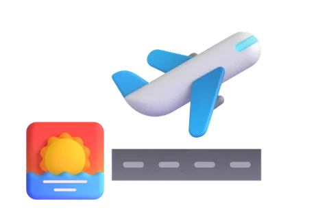
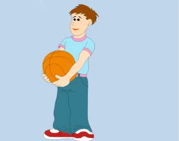
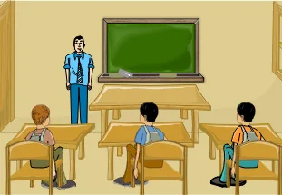
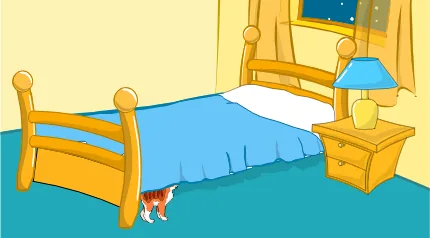

المفعول فيه: ظرفا الزمان والمكان
الدرس 4 من 5 — التراكيب
أُلاحظ
أقرأ الأمثلة وأستمع إليها، وألاحظ الكلمات الملوّنة.
- أَقْلَعَتِ الطَّائِرَةُ صَبَاحًا
- تَهْطِلُ الْأَمْطَارُ شِتَاءً
- لَعِبَ الْوَلَدُ سَاعَةً
- وَقَفَ الْمُعَلِّمُ أَمَامَ التَّلَامِيذِ.
أستنتج
ظرف الزماناسمٌ يدلّ على زمن حدوث الفعل، ويكون منصوباً.
ظرف المكاناسمٌ يدلّ على مكان حدوث الفعل، ويكون منصوباً.
ويُعرف الظرف بسؤال: متى؟ للزمان، وأين؟ للمكان.
منصوباضغط على الكلمة الملوّنة لترى إعرابها، وعلى 🔊 لتستمع.
أمثلة على ظرف الزمان

أَقْلَعَتِ الطَّائِرَةُ صَبَاحًا
تَهْطِلُ الْأَمْطَارُ شِتَاءً

لَعِبَ الْوَلَدُ سَاعَةً
أمثلة على ظرف المكان

وَقَفَ الْمُعَلِّمُ أَمَامَ التَّلَامِيذِ.

حَلَّقَتِ الطَّائِرَةُ فَوْقَ السَّحَابِ.

اِخْتَبَأَ الْقِطُّ تَحْتَ السَّرِيرِ.
ومن ظروف الزمان: صباحاً، مساءً، ليلاً، ظهراً، يوماً، ساعةً، غداً، قبلَ، بعدَ. ومن ظروف المكان: فوقَ، تحتَ، أمامَ، خلفَ، يمينَ، يسارَ، عندَ، بينَ، حولَ، وسطَ.
أُطبّق
استخرج ظرف الزمان وظرف المكان: صنِّف الكلمة الملوّنة في كل جملة.
1ما نوع الظرف «خَلْفَ» في: «صَلَّيْتُ خَلْفَ الْإِمَامِ»؟
2ما نوع الظرف «مساءً» في: «غادرتِ القافلةُ مساءً»؟
3ما نوع الظرف «غداً» في: «تفتحُ المدارسُ غداً أبوابَها»؟
4ما نوع الظرف «قُدَّامَ» في: «مَشَى الطِّفْلُ قُدَّامَ وَالِدَيْهِ»؟
5ما نوع الظرف «حَوْلَ» في: «طَافَ الْحَاجُّ حَوْلَ الْكَعْبَةِ»؟
6ما نوع الظرف «ظُهْرًا» في: «تَشْتَدُّ الْحَرَارَةُ ظُهْرًا فِي فَصْلِ الصَّيْفِ»؟
7ما نوع الظرف «لَيْلَةَ» في: «حَضَرَ أَخِي لَيْلَةَ السَّبْتِ»؟
8ما نوع الظرف «صيفاً» في: «تنضجُ الفاكهةُ صيفاً»؟
9ما نوع الظرف «وَسَطَ» في: «لَا تَمْشِ وَسَطَ الشَّارِعِ»؟
10ما نوع الظرف «تَحْتَ» في: «جَلَسَ اللَّاعِبُونَ تَحْتَ الشَّجَرَةِ»؟
إجابات صحيحة من أول محاولة:
أتمرّن أكثر
أستمع، ثمّ أرتّب الكلمات لأكوّن الجملة:
أستمع، ثمّ أكتب ما أسمع:
أستمع، ثمّ أكتب ما أسمع:
✓ أنهيتَ هذا الدرس
دروس العربية — للاستعمال التعليمي.